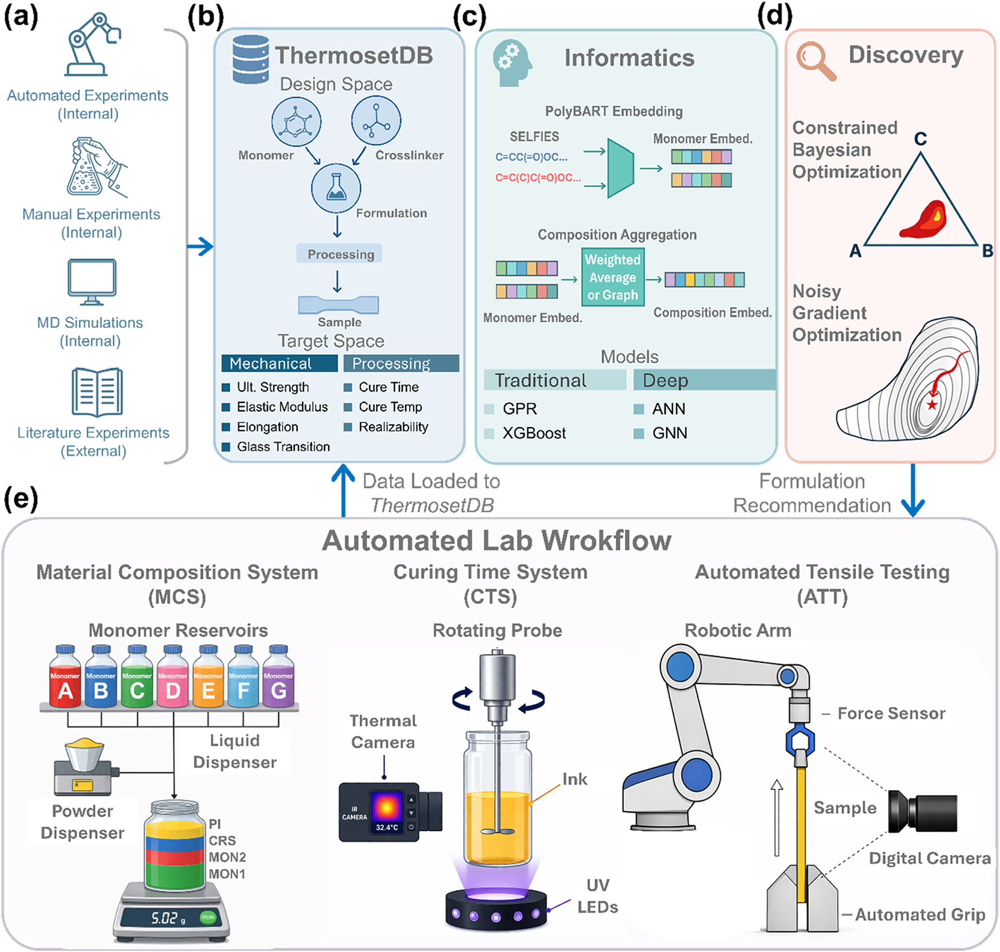
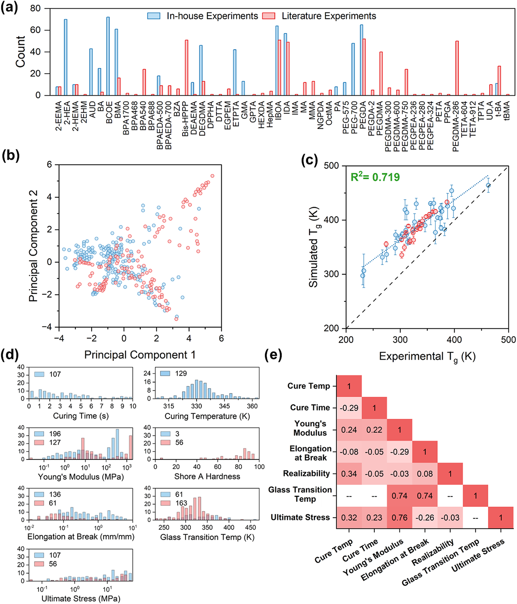
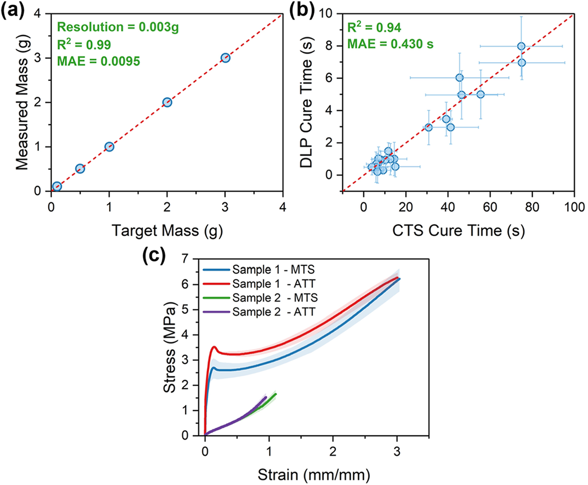
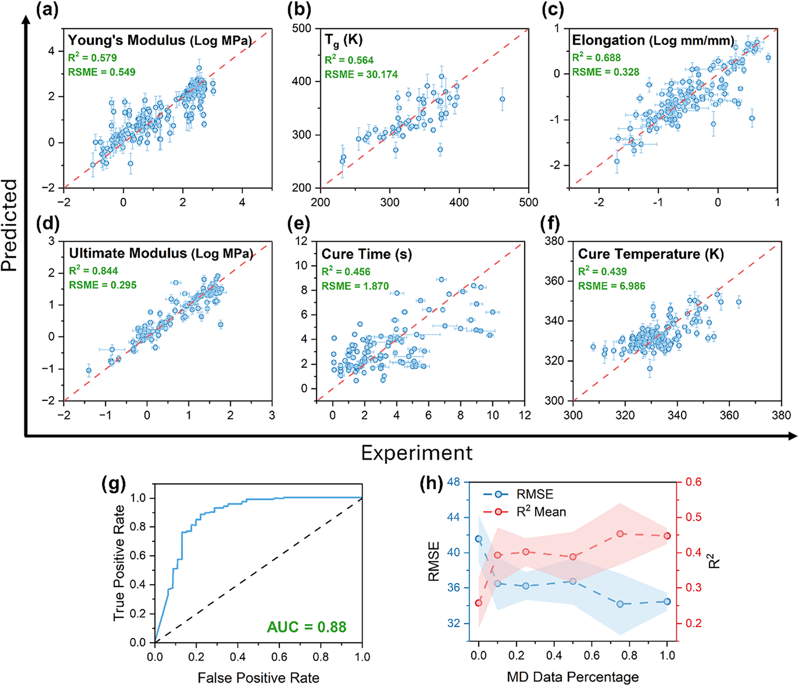
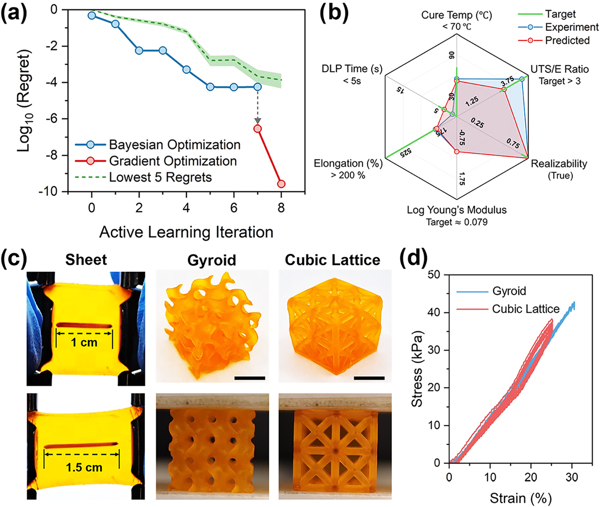

将多保真学习接入实验闭环，按需发现热固性材料配方
论文原文 ↗Scalable Thermoset Informatics Integrated with Autonomous Experimentation for On-Demand Discovery
Marcus R. Fratarcangeli、Ayush Jain、Farzad Gholami 等｜Chemistry of Materials，2026｜DOI｜
光固化打印需要面向具体用途的树脂：有时要柔软、可拉伸，有时要更硬、更强，同时还要满足固化速度和温度要求。单体、交联剂及其配比形成庞大组合空间，逐一配料和测试十分费力。这篇工作将热固性材料数据库、性质预测与部分自驱实验室接在一起，让模型提出配方、实验测量反馈，寻找同时满足多项目标的材料。
作者以热固性丙烯酸酯为对象，融合实验室、文献和分子动力学数据，训练单任务与多任务模型，再把模型放进真实配料和表征流程。最终完成目标弹性材料的优化，人工投入减少超过 90%，目标优化约需 40 小时主动实验时间。
方法怎样做：用配方表示连接数据，再让预测指导实验
热固性材料固化后形成交联网络，同一单体的作用会随着配比和其他组分变化。作者建立的 ThermosetDB 将组分、配方、加工步骤、样品和性质关联起来，整合实验室测试、文献和模拟结果，为模型提供组成与性能之间的对应关系。
每个组分先写成 SELFIES 分子字符串，由 polyBART 编码为数值向量。这种“嵌入”把分子的化学结构变为模型可以处理的特征。作者比较了按配比平均组分向量的方式，以及将组分和摩尔分数放进关系图、由图神经网络学习组合贡献的方式；后者利用组分之间的信息传递形成整份配方的表示。

图1｜多来源数据进入数据库和配方模型，候选搜索连接配料、固化监测与力学测量，新数据再返回训练。多任务模型同时学习模量、玻璃化转变温度 Tg、强度等性质，利用它们与组成之间的相关关系。文献数据扩展化学覆盖；模拟则从单体混合、交联和弛豫出发，生成固化网络，通过降温过程的体积变化估计 Tg，为实验预测补充另一类保真度的信息。

图3｜实验室、文献和模拟数据的化学覆盖、性质分布及相关性，说明融合学习可以利用哪些信息。模型接收目标性质后，优化器在配方空间选择待测组合。初期以贝叶斯优化在离散配比网格中探索，结合预测和不确定度，每轮提出四个配方。积累数据后，可求导的多任务图网络从较好的配方出发，沿预测更接近目标的方向连续调整比例，进一步细化组成。
候选进入部分自驱实验室后，系统按质量反馈自动配料、混合，记录紫外固化过程中的扭矩和温度，再由机器人拉伸系统测量试样，提取模量、极限强度和断裂伸长。研究者安排制样及必要的样品操作，自动平台承担重复配料、测量和分析，使模型与真实材料性质形成循环。
主要结果：多源预测、实验效率与目标配方的共同改善
独立测量验证为闭环提供数据基础
作者先分别检验平台组件：比较目标与实际配料质量，将固化监测结果连接到打印曝光，并用两种刚度的聚合物对照自动拉伸系统与商用测试机。应力—应变曲线和提取性质接近，使自动采集结果能够进入后续模型训练。

图2｜配料质量、固化时间映射及自动拉伸与商用设备的比较，将自动操作接到可用的材料测量。对于每轮四个配方，主动人工时间由约 400 分钟降到 35 分钟，减少 91.3%。自动测量和结果提取使研究者可以将精力从持续操作与手工分析转向实验设计。
多任务与多来源数据提高性质预测
在十折交叉验证中，图网络的 Tg 均方根误差，从单任务、仅实验室数据的约 43.3 K，降到多任务、实验—文献联合训练的约 30.1 K。在专门考察模拟数据增广的另一组实验中，加入全量模拟数据后，Tg 预测误差从 41.8 K 降到 34.47 K。这两组结果展示了性质相关性、额外化学覆盖和模拟信息对预测的帮助。

图4｜预测与实验性质的比较，以及增加分子动力学数据后 Tg 预测的变化。从粗配比搜索到实际打印材料
目标弹性材料需要模量接近 1.2 MPa、强度与模量之比超过 3、断裂伸长超过 200%，同时满足快速固化和加工温度要求。前期探索建立数据覆盖后，贝叶斯搜索先找到 85.0 wt% BCOE 与 15.0 wt% DEGDMA 的组合，梯度细化再将比例调整到 87.4:12.6。
BCOE 是单官能丙烯酸酯，DEGDMA 是双官能交联剂；调整比例改变了固化网络的形成及其力学表现。最终配方测得 模量 1.2 MPa、极限拉伸强度 3.7 MPa、断裂伸长 200.9%，并满足设定加工窗口。作者将树脂打印为薄片、Gyroid 结构和立方晶格，进一步进行循环拉伸或压缩测试。

图5｜优化过程、预测与实测性质、打印样品及循环力学表现，把模型找到的配比接到真实材料。目标优化约用 40 小时主动实验时间完成，体现了数据库、预测器、优化器和实验设备共同工作的效率。
研究贡献
这篇工作给出了一条面向热固性配方的端到端发现路线。它既处理组分组合与多种性质，又把实验室、文献和模拟数据嵌入持续更新的模型；部分自驱实验室则将候选转为实际机械与加工测量。通过目标弹性材料的优化，作者展示多保真学习怎样进入实验室工作流程，使按需配方发现能够以较少人工和较少穷举实验推进。
附：完整原始摘要中文翻译
随着光聚合物增材制造日趋成熟，对按需、面向特定应用的材料的需求不断增长。一个主要瓶颈是对新型热固性聚合物配方巨大设计空间的探索不足，而这些配方必须同时满足材料性质要求与加工约束。这一挑战源于配方的组合复杂性和实验评价的高成本。在本工作中，我们提出一条端到端流程，将部分自驱实验室（p-SDL）与信息学驱动的优化相结合，用于发现并验证热固性丙烯酸酯配方。
该流程从一个热固性丙烯酸酯数据库开始，整合包括实验室内部实验、分子动力学模拟和文献数据在内的多种数据来源。这些数据集用于训练单任务与多任务预测模型，模型直接对接 p-SDL，以指导实验并测量力学性质及加工相关性质。每个组件先独立验证，再联合部署以优化一个目标弹性材料，使人工投入减少超过 90%。完整优化只需要约 40 小时的主动实验时间，展示了无需穷尽筛选即可快速找到满足多项目标性质的配方。本工作建立了一个可扩展框架，将多保真机器学习嵌入实验室工作流程，使自主、数据驱动的热固性配方发现成为可能。